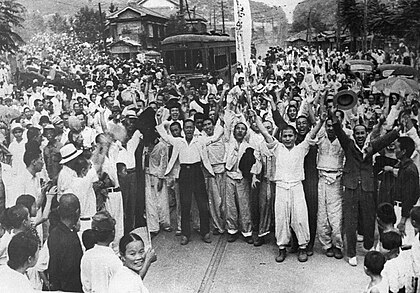

한국의 해방

- 일제의 지배에서 벗어나게 된 것은 일제의 패망이라는 변화이다.
- 1910년대: 무단통치
3.1운동
3.1운동으로 일제의 지배 방식에 변화가 생겼다.
강압적인 통치는 반일정서를 불러일으키고 이는 곧 항일투쟁으로 이어졌기에 강압적인 통치 방식에서 유연하고 부드러운 문화통치 방치를 선택하게 되었다.
- 1920년대: 문화통치
문화를 말살시켜 일본에 동화시키고자 했다.
- 1930년대: 동화정책(언어말살, 창씨개명 등)
태평양전쟁
태평양 전쟁으로 많은 물자가 필요했고 타파를 위해 징병, 징용, 위안부 등을 감행했다.
- 1930년대 후반~일본 패망 전: 국가총동원체제
일본의 패망
미국의 히로시마, 나가사키 원자폭탄 투하로 일본의 항복을 받아냈고 미군정이 시작되었다.
- 1945년: 광복
- 1910년대: 무단통치
맨위로
한국전쟁

한국전쟁이 시작하게 된 것은 미국과 소련의 한반도 철수이다.
전쟁의 배경- 미소공동위원회 폐쇄
- 소련 - 북학 정권 수립 후 한반도 철수
- 미국 - 유엔결의안을 통해 한국 정부 수립 후 철수
- 에치슨라인 선언
- 북한 - 김일성을 중심으로 전쟁 준비
- 남한 - 이승만 정권의 반공 체제 강화
맨위로
그 후

- 미국 - 반공
- 소련 - 군비 증강
- 중국 - 사회주의
- 일본 - 전쟁특수와 자본주의로 동아시아의 미국
- 이승만 정부
4.19 혁명
배경: 시위에 참가해 최루탄을 맞고 쓰러진 김주열 열사의 시신을 부두 앞바다에서 발견
전개과정: 학생 세력을 중심으로 전국적으로 확산
- 장면 내각
5.16 군사정변
박정희의 군사 정변으로 군정 실시
- 박정희 군정
12.12 사태
10.26 사태로 박정희가 살해되고 전두환 신군부의 군사 반란으로 권력 장악
- 전두환 신군부
맨위로
한국현대사의 연표
| 연도 | 주요사건 | 설명 |
|---|---|---|
| 1945 | 광복 미소군 분할점령 조선 건국 준비 위원회 | 광복 미국의 소련에 38도선 분할 점령 제안을 소련이 수응하며 미소의 영향 아래 군정 실시 좌우 합작의 형태로 결성된 조선 건국 동맹을 계승 |
| 1946 | 제 1차 미소 공동위원회 이승만의 정읍발언 좌우합작위원회 개최 | 협의 대상 선정을 둘러싸고 의견차이로 결렬 남한만의 정부 수립 주장 여운형, 김규식을 중심으로 미군정 지원 |
| 1947 | 제 2차 미소 공동위원회 한국 문제 유엔 상정 | 협의대상문제, 미소 냉전 심화로 결렬 미국이 한반도 문제를 유엔에 이관 |
| 1948 | 제주 4.3 사건 5.10 총선거 대한민국 정부 수립 선포 조선 인민 공화국 선포 여수순처 10.19 사건 유엔총회 결의 | 제주 좌익 세력이 단독 정부 수립을 반대한 무장봉기, 무고한 양민 희생 남한만의 총선거, 제헌 국회의원 선출 대한민국 정수 수립을 국내외에 선포 북조선인민회의에서 인민공화국 헌법 채택 4.3사건 진압에 동원된 군대가 반발 한반도의 독립 임시정부 수립, 최장 5년간 신탁통치 |
| 1949 | 농지개혁법 | 유상매입, 유상분배를 원칙으로해 지주제 소멸, 자작농 증가 |
| 1950 | 애치슨 선언 6.25전쟁 | 미국의 방위선에서 한국과 타이완을 제외한다는 선언 북한의 남침 -> 유엔군 참전(인천상륙작전) -> 중국군 참전 -> 전선 교착화 |
| 1952 | 이승만 정부의 발췌 개헌 | 재선을 위해 내각 책임제 개헌만 발췌, 대통령 직선제로 개정 |
| 1953 | 휴전협정 체결 한미 상호 방위 조약 체결 | 군사 분계선, 비무장 지대, 포로 교환 문제 타결 한국이 공격을 받을때만 미국이 원조, 북한공격 용인 안 함 |
| 1954 | 사사오입 개헌 | 사사오입(반올림)을 근거로 초대 대통령에 한해 무제한 출마 가능 위헌 통과 |
| 1958 | 진보당 사건 신국가 보안법 통과 | 진보당 조봉암을 간첩혐의로 사형 언론, 야당 탄압 |
| 1959 | 경제신문 강제 폐간 | 언론 탄압 |
| 1960 | 3.15 부정선거 4.19 혁명 이승만 하야 장면 내각 | n인조 투표, 투표 바꿔치기 등의 부정선거 김주열 시신 발견을 촉발로 일어난 민주주의 혁명, 이승만 독재 반대 이승만 대통령의 하야 대통령: 윤보선, 국무총리: 장면 선출 |
| 1961 | 5.16 군사 정변 박정희 당선 | 박정희 군정 실시 박정희 5대 대통령에 당선 |
| 1964 | 한일 협정 6.3 시위 | 경제 개발 자본 확보를 위해 일제의 사과나 배상 문제 외면 한일 회담 반대 운동 |
| 1966 | 베트남 파병 | 베트남전 파병, 박정희 정부의 경제 개발 자금 마련 |
| 1969 | 3선 개헌 | 대통령 임기 4년, 1차에 한해 중임, 장기집권 추구 |
| 1970 | 전태일 분신 사건 | 청년노동자 전태일의 분신사건으로 노동 운동 활성화 |
| 1972 | 7.4 남북공동성명 유신헌법 | 남북 조절 위원회 구성 국회 해산, 정치 활동 정지 |
| 1973 | 평화 통일 선언 | 남북 동시 유엔 가입 제의, 문화 개방 |
| 1979 | 부마 민주 항쟁 10.26 사태 12.12 사태 | 유신체제 반대 민주화 운동 중앙정보부장 김재규의 박정희 살해, 유신체제 붕괴 전두환 신군부의 권력장악, 군사 반란 |
| 1980 | 5.18 민주화 운동 | 광주에서 일어난 민주화 요구 시위에 계엄령 발표와 무력 진압 |
| 1987 | 박종철 고문치사 사건 4.13 호헌 조치 6.10 민주 항쟁 6.29 민주화 선언 | 불법 체포해고문하다 사망해 조직적 은폐 시도 전두환의 현행 헌법 유지 선언 전두환 정권에 맞서 일어난 민주화 운동 노태우가 발표한 시국 선언으로 이후 대통령 직선제 개헌 |